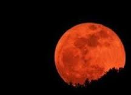

Захоплюючі видовища у Сонячній системі
Затемнення Сонця та Місяця відбуваються завдяки фізичним особли-востям цих небесних тіл та їх особливому розташуванню. Розглянемо їх.
- Сонце – найближча до нас зоря
- Місяць - природний супутник нашої планети
- Причини, види та особливості затемнень Місяця
- Екскурс в історію подорожі Колумба
- Затемнення Сонця
